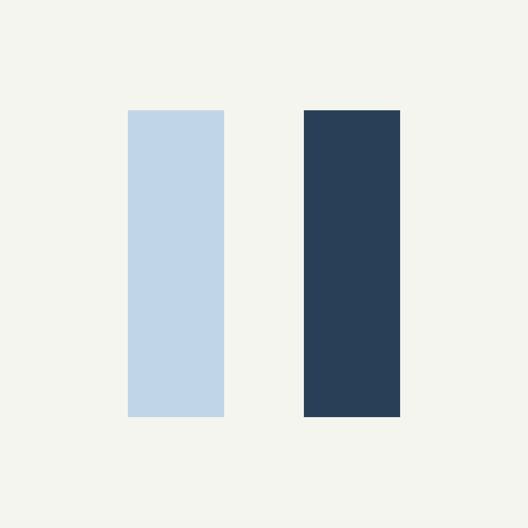
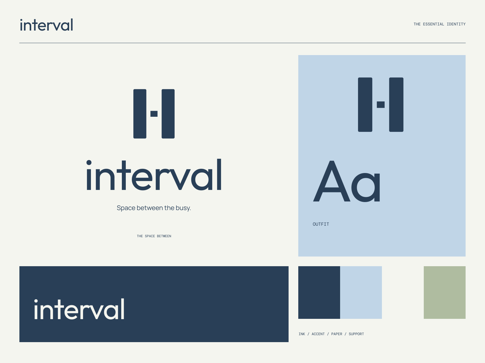

01
A clearer beginning
One thoughtful step toward making more room in the day.
FOCUS / REST / A MORE USEFUL RHYTHM
Space between the busy. Only the space you need.

A coherent little world
Only the space you need. Space between the busy.
01
One thoughtful step toward making more room in the day.
02
Simple practices with enough structure to become familiar.
03
An open, considered experience that keeps the essentials clear.

The point of view
Quiet light wells, precisely separated planes, softened navy-and-blue surfaces, and unusually open typographic rhythm. Restraint is a measurable design decision.